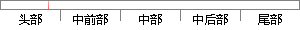

表2-3 程序状态寄存器格式
片段位置图

相似结果
相似片段：一个任务栈可能包括的内容如表2-3所示.表2-3...采用固定长度的指令格式,指令归整、简单、基本寻址...2.状态寄存器 (1)当前程序状态寄存器CPSR 所有模式...
| 标题 | 《基于ARM和μC/OS-Ⅱ的嵌入式系统的研究与开发》 |
| 对比库 | 中国学位论文全文数据库 |
| 作者 | 周洁 |
| 机构 | 华东交通大学 |
| 分类 | 计算机应用技术 |
| 年份 | 2006 |
| 相似率 | 100% （严重抄袭） |
※ 片段修改建议 ※
近似词参考：- 格式：格局 花式 花样 晚餐 款式
- 状态：状况
- 程序：法式 步伐
系统自动生成语句： 表2-3 法式状况寄存器格局
注：本片段修改建议为系统自动生成，仅供参考。